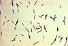

clostridium-perfringens

Definition: Clostridium perfringens (formerly known as C. welchii, or Bacillus welchii) is a Gram-positive, rod-shaped, anaerobic, spore-forming pathogenic bacterium of the genus Clostridium. C. perfringens is ever-present in nature and can be found as a normal component of decaying vegetation, marine sediment, the intestinal tract of humans and other vertebrates, insects, and soil. It has the shortest reported generation time of any organism at 6.3 minutes in thioglycolate medium.Clostridium perfringens is one of the most common causes of food poisoning in the United States, alongside norovirus, Salmonella, Campylobacter, and Staphylococcus aureus. However, it can sometimes be ingested and cause no harm.Infections due to C. perfringens show evidence of tissue necrosis, bacteremia, emphysematous cholecystitis, and gas gangrene, also known as clostridial myonecrosis. The specific name perfringens is derived from the Latin per (meaning "through") and frango ("burst"), referring to the disruption of tissue that occurs during gas gangrene. The toxin involved in gas gangrene is α-toxin, which inserts into the plasma membrane of cells, producing gaps in the membrane that disrupt normal cellular function. C. perfringens can participate in polymicrobial anaerobic infections. It is commonly encountered in infections as a component of the normal flora. In this case, its role in disease is minor.
Source: Wikipedia
Wikipedia Page (Something wrong with this association? Let us know.)
Wikidata Page (Something wrong with this association? Let us know.)